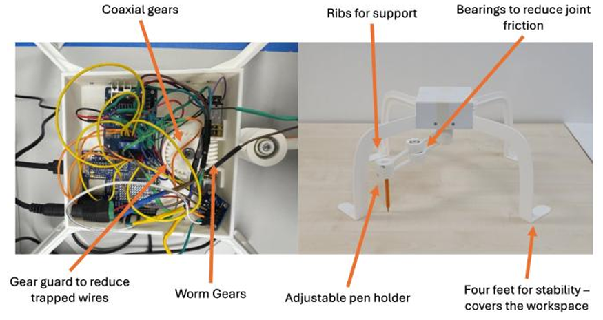

The Objective & Hardware Base
Goal: Build a 2-DOF robotic arm to execute precise geometric paths to understand the fundamentals of surgical robotics. We chose a top-down parallel configuration to maximize end-effector accuracy and eliminate gravitational friction on the links.
- Chassis: Custom-designed and 3D-printed in PLA by the mechanical team.
- Actuation: Two N20 gear motors mounted perpendicularly using a worm gear transmission.
- Why Worm Gears? Allowed for a shared origin joint and provided a high torque-to-speed ratio to naturally prevent endpoint overshoot.